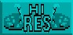

This is a very powerful option. If it is on, any Object taken from the bank will
change the current palette to its own resolution preference. If the option is off, the
number of colours remains unchanged.
This is a very powerful option. If it is on, any Object taken from the bank will
change the current palette to its own resolution preference. If the option is off, the
number of colours remains unchanged.Adjust
This is a very powerful option. If it is on, any Object taken from the bank will
change the current palette to its own resolution preference. If the option is off, the
number of colours remains unchanged.
This can have one of two effects. Either the Object has less colours than your current screen, and nothing is lost. Alternatively, if the Object has more colours than the current screen, then the higher value colours are lost. The bank will remain unchanged until the Object is deposited into it again. This [ADJUST] option is normally on.
Hi-Res

This is also an on/off switch, which selects the current screen mode, with the
maximum number of colours in high resolution being 16. Everything else in the
program remains unchanged, except for these colour resolutions.
Number of Colours
A choice of six options is available, instantly selecting the number of colours displayed
on the Edit Screen, as follows: 2, 4, 8, 16, 32 or 64.
Animation
 AMOS Professional allows you to test an animated movie sequence of the Object images
which are currently loaded. This is extremely useful, as well as very entertaining.
AMOS Professional allows you to test an animated movie sequence of the Object images
which are currently loaded. This is extremely useful, as well as very entertaining.
You can test the system now, using the Objects in this file:
"AMOSPro_Tutorial:Objects/Play_Bobs.Abk"
When the [Animation] icon is selected, the Edit Screen gives way to your own animation suite!.A diagram of this facility is shown below.